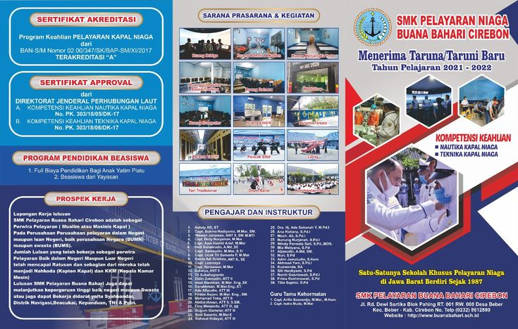

● PPDB 2026/2027 Telah Dibuka
SMA PGRI KALIWUNGU KUDUS
Segera bergabung bersama sekolah unggulan yang membentuk generasi cerdas, berkarakter, dan berprestasi.
A
Akreditasi
100%
Tingkat Kelulusan
25+
Ekstrakurikuler

